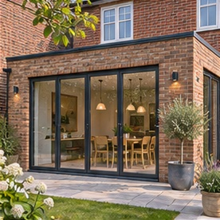
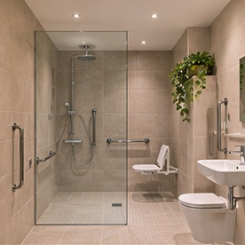
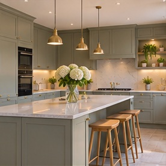
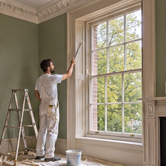
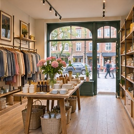
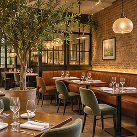
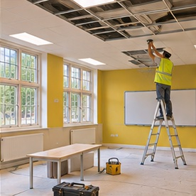
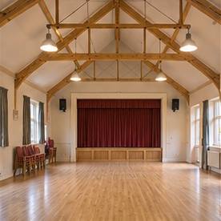
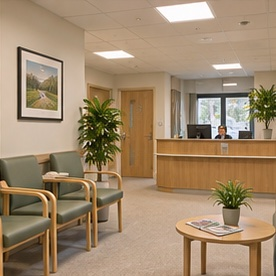
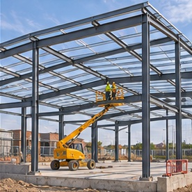

Ascot
Brick courtyard house
A detached family house arranged around a sheltered outdoor dining space, with a separate entrance for muddy boots and garden tools.
Selected work
Building and refurbishment work from Civic’s portfolio.

Slough

London · NW1

Banbury · OX16

Maidenhead · SL6
Illustrated project briefs
Explore 20 example briefs for different settings. The locations are illustrative and the images are AI-generated. Completed Civic projects are shown above.
Ascot
A detached family house arranged around a sheltered outdoor dining space, with a separate entrance for muddy boots and garden tools.

Marlow
Open the rear of a narrow kitchen into a new dining room, with level access to the terrace.

Ealing
Fit a bedroom, shower room and staircase into an existing roof while retaining storage under the eaves.

Woking
Rework the ground-floor layout around a level shower, wider doorway and space for assisted use.

Henley-on-Thames
Plan appliance positions, stone worktops and a separate laundry area around the household’s daily routine.

Bracknell
Create an insulated workspace with power, natural light and a usable path from the house.

Guildford
Link two garden levels with broad steps, seating and paving laid to suitable falls.

Richmond
Prepare sash windows, repair cornice details and finish walls and woodwork in a coordinated palette.

Reading
Reconfigure meeting rooms and workstations, with phased deliveries while adjoining offices stay occupied.

Wokingham
Coordinate lighting, display joinery, stock storage and a durable entrance floor before opening day.

Windsor
Use a sample room to agree finishes, then schedule bedroom and bathroom upgrades around bookings.

Kingston upon Thames
Arrange banquette seating, service routes and lighting for a dining room refresh.

Slough
Sequence repairs and floor finishes in separate bays around deliveries and loading access.

High Wycombe
Coordinate storage, flooring and lighting around the school holiday programme.

Staines-upon-Thames
Refresh the main hall and servery with easy-clean finishes and accessible circulation.

Watford
Replan reception seating, privacy screening and wayfinding around patient arrivals.

Beaconsfield
Adapt a small ancillary space for storage and meetings while coordinating works around services.

Uxbridge
Coordinate foundations, frame, envelope and communal areas against a phased delivery programme.

Farnborough
Define the structural package, vehicle doors, slab requirements and service routes for a new workshop.

Basingstoke
Sequence the construction of several homes around shared access, utility connections and handover dates.